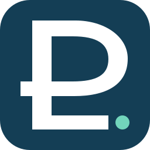

Geometric P · refined concept
Two independently balanced vector marks based on the owner's P-and-path sketch. Not yet deployed.
01 · Primary signature
Monochrome navy. Continuous geometric stem and bowl; baseline ends before the circular destination.
02 · Compact icon

Redrawn optical proportions, not a scaled or cropped primary signature.
Small-size legibility · compact mark
Brand exploration only. The active application still uses the previously merged UX-05A mark until the owner approves a replacement.